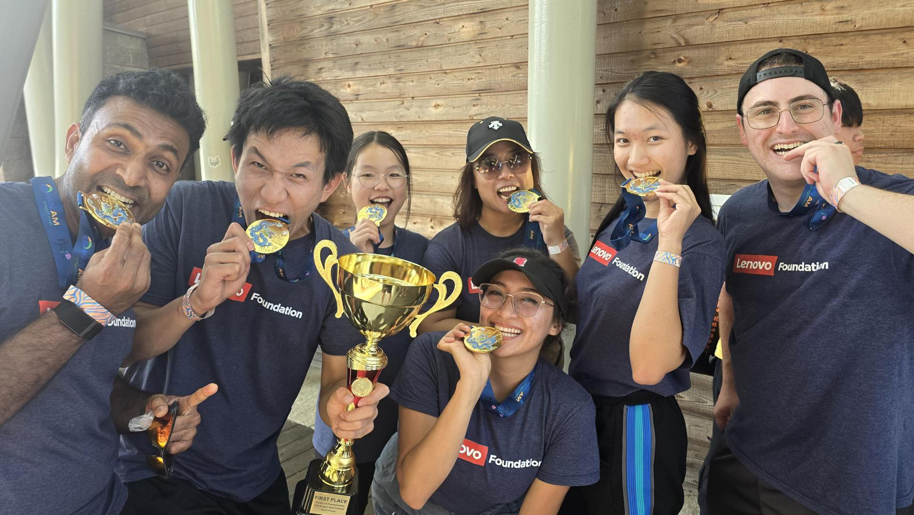

I bridge technology with human behavior to build better brand experiences.
Hi, I'm Zirou (Yoyo) Liu. As an Honors Carolina junior double-majoring in Information Science and Anthropology at UNC-Chapel Hill, I live at the intersection of technical analytics and human insight. I don't just look at algorithms; I look at how people interact with them. My goal is to find where corporate messaging and AI-generated responses disconnect, translating messy user data into clear, compelling stories.
Looking for my full background? You can review my complete resume here.


I (2nd from the right) volunteered as a paddler for Lenovo at the 2025 Triangle Area Dragon Boat Festival, securing 1st place in Division D with amazing Team Spirit.
Featured Writing & Design Samples
Optimized Prompt Blueprints
AI Search & GEO FrameworksDesigned custom prompt frameworks to bridge the gap between complex AI models and real-world user needs. These samples demonstrate my hands-on understanding of how to structure inputs so that LLMs extract reliable, accurate data rather than vague summaries.
Example 1: Student Workflow — High-Density Literature Review Guide
Developed during my Perplexity AI ambassadorship. After discovering that non-technical students struggled with vague AI summaries, I engineered this prompt template. It forces LLMs to organize unstructured research texts into precise data matrices with accurate source citations, eliminating hallucination during literature reviews.
Example 2: Corporate Strategy — GEO Employer Brand Audit Flow
Created specifically as a diagnostic framework for corporate Talent Branding. This prompt reverse-engineers how an AI search engine crawls the web, identifying "narrative gaps" between a company's official Employer Value Proposition (EVP) and public, third-party model responses.
Cross-Cultural Creative Content & Strategy Behind the Narrative
Digital Marketing & Gen Z StrategyFor this Yamibuy viral campaign, I rejected generic product catalog bumping. Instead, I analyzed the psychological pain points of Chinese international students facing high stress and late-night study blocks. I launched a wellness-centered narrative, explicitly calling on peers to replace unhealthy, high-sugar bubble teas with a traditional, healthy homemade Asian dessert. I walked users through the recipe steps, positioning it as the ultimate stress-relief comfort food. Crucially, I embedded a call-to-action: to replicate this dessert, students needed to purchase 3 highly specific ingredient raw materials exclusive to the Yamibuy platform. This subtle, benefit-led storytelling drove a peak organic reach of 1,600+ views and directly converted casual social readers into active e-commerce buyers.
Interactive Digital Narrative on "Smart Pill"
UX Design / Biosociocultural ResearchWhen complex academic research stays trapped in dense 10-page papers, it loses its human impact. For this independent secondary research project, I wanted to investigate why the non-medical use of Adderall has transformed from an individual student dilemma into a systemic campus-wide culture. Instead of writing a traditional static report, I engineered an interactive web experience using Genially to map out the "invisible systems" driving this phenomenon—bridging neuro-biomechanisms with deep anthropological theory. To ensure the dense technical and medical data was accessible to non-technical stakeholders, I executed rigorous usability testing with peers and TAs, continuously iterating the information hierarchy, interface logic, and visual assets based on user cognitive load. This project highlights my unique ability to diagnose systemic human behaviors and translate raw, multi-layered research into highly engaging, empathetic UX storytelling.
Ethnographic Analysis & Brand Perceptions
Qualitative Research & Social TheoryAn independent ethnographic research paper investigating how UNC students construct personal brands through material objects (e.g., Stanley Cups vs. gifted jewelry). Synthesized a collaborative corpus of 72 interviews by building a structured qualitative coding framework in Excel to normalize and de-duplicate 100+ consumer items. Grounded in Simmel and Mauss’s social theories, the study maps the daily tension between trend-driven conformity and authentic, emotion-rooted brand attachment—providing actionable methodologies for tracking modern consumer sentiment and subcultural authenticity.
Institutional Communications & Brand Strategy
Corporate Copywriting & PRAs the Communications Committee Chair for the UNC Information and Library Science Student Association (ILSSA), I steward our institutional voice. Below is a published digital edition alongside a strategic narrative snippet crafted to define our program's value proposition for the upcoming semester.
Visual Direction & Co-Branded Campaign Strategy
Creative DirectionA promotional creative asset engineered for the co-branded campaign between Yamibuy and HOX. This project showcases the tactical ability to align dual corporate brand guidelines into an engaging, human-centric visual asset that successfully catalyzed offline campus engagement.
Get in Touch
I'm always excited to connect regarding talent branding, AI search optimization (GEO/AEO), and digital content strategy. Please let me know if you have any questions!